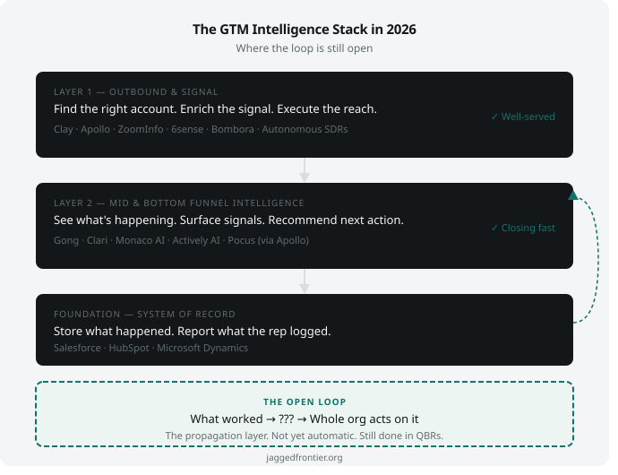

When I was building the system to grow a cloud business from $100M to $1B, I wasn't thinking about GTM intelligence. I was thinking about which accounts to go after with what workloads, wh[...]
We stitched together what we needed. I started with finance data that couldn't be shared widely and CRM records very few kept updated or trusted. I built consumption intelligence using tel[...]
It worked. It was not elegant — a hodgepodge of connected tools assembled for specific programs. But when the pieces talked to each other, the intelligence was clear. We could see which [...]
I recently went back through the GTM Motion Diagnostic I published — the diagnostic layers, the go/no-go filter, the five a[...]
This space has recently exploded. What was once just Salesforce and HubSpot — systems of record that stored what happened — now has an entire layer of intelligence, signal capture, and[...]
So before I scope and build the first app, I went looking. Here's what I found.

The GTM Intelligence Stack: showing the propagation gap between layers
What's been built — and where it concentrates
The GTM stack in 2026 has three distinct layers. The easiest way to understand them is to start where the energy is and work backward.
The outbound and signal layer
Where the innovation has concentrated
Clay ($100M ARR, $5B valuation), Apollo, ZoomInfo, 6sense, Bombora, and dozens of others have built sophisticated systems for finding the right account, enriching contact data, detecting i[...]
This layer is genuinely impressive. Clay's thinking around GTM engineering — see the world as data, enrich before you act, segment don't spray, build systems not campaigns — reflects a[...]
But almost everything here is pre-first-meeting. The system gets you in the right room at the right time. What happens next is a different problem.
The mid and bottom funnel intelligence layer
Where the market is actively moving
Gong captures conversations and coaches reps. Clari rolls up forecasts for the CRO. Monaco AI creates per-account agents that flag missed signals and suggest next steps. Actively AI puts o[...]
This layer is essential and growing fast. The companies building here are solving genuine problems. Monaco and Actively are the closest to what we were building manually — per-account in[...]
A wave of early-stage companies is beginning to address this layer more directly — relationship mapping, deal memory, contextual coaching, context layers between data and action. Small, [...]
What I notice is that almost everything here is still an observation and recommendation system. It sees the problem, describes it, and recommends an action. What it doesn't yet do is learn[...]
The foundation: the system of record
Everything above sits on a foundation built for humans
Salesforce, HubSpot, Microsoft Dynamics are actively expanding into AI. Salesforce's Agentforce, HubSpot's AI layer, and Einstein features across the suite show these companies understand [...]
But the core data architecture hasn't fundamentally changed. It was designed for reps to manually update fields, move stages forward, and log activities. That means the data an AI agent re[...]
That structural constraint shapes everything built above it. The most sophisticated signal layer in the world is still reading from a system that was designed for humans first.
What's still missing — for now
When I ran the manual version of this system, the hardest part wasn't identifying the pattern. It was building trust around it and propagating it down the org chain.
We'd find something that worked — a specific sequence of actions that moved a stuck deal forward, a play that consistently unlocked a new workload in a specific segment — and it would [...]
The org structure is a constraint to work within, not around.
What the current GTM stack doesn't have is the system that closes that loop automatically. Not just "here's what's happening in this deal" but "here's what worked across all deals like thi[...]
Three specific things are still missing:
A VP of Sales managing 40 accounts needs to know which deals are actually progressing and which ones just look that way. Which accounts should get executive attention this week. Where to[...]
How does a regional sales manager decide which accounts to prioritize? How does the head of sales think about territory design, incentive structure, market coverage? These decisions are [...]
Every deal that closes or loses contains information about what worked. Every stall contains a signal about what went wrong. That information currently dies in a Gong transcript or a clo[...]
I want to be honest: companies are moving toward this. Clay is expanding beyond top-of-funnel. Monaco and Actively are building account intelligence that gets closer to portfolio-level rea[...]
But as of today, the loop is still open.
Why I'm building here
The GTM Motion Diagnostic started as a way to document how I think about these problems — the diagnostic layers, the go/no-[...]
The natural next step was to start building. But before I did, I wanted to know what already exists and what's genuinely missing. Not to avoid building something redundant — some overlap[...]
The research confirmed what I suspected from building this manually: the top-of-funnel and the observation layer are well-served. The portfolio intelligence layer, the management operating[...]
That's where the apps I'm building are focused. Not because nobody else has thought of it — clearly they have — but because I've run the manual version and I know exactly which parts a[...]
The next post will cover the architecture: the context graph, the five apps, and what I'm building first.
For now — here's the map. Here's what's been built. Here's where I think the gaps still are.